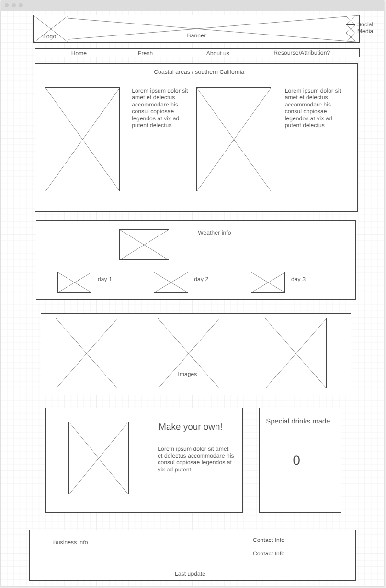
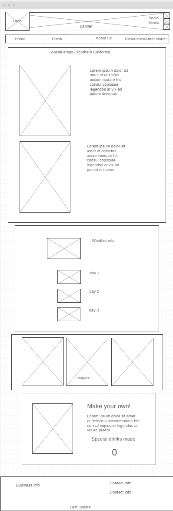
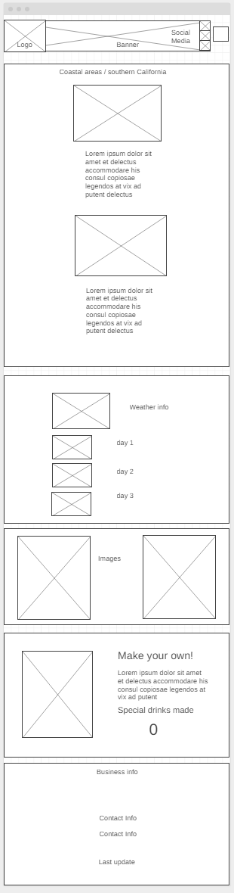
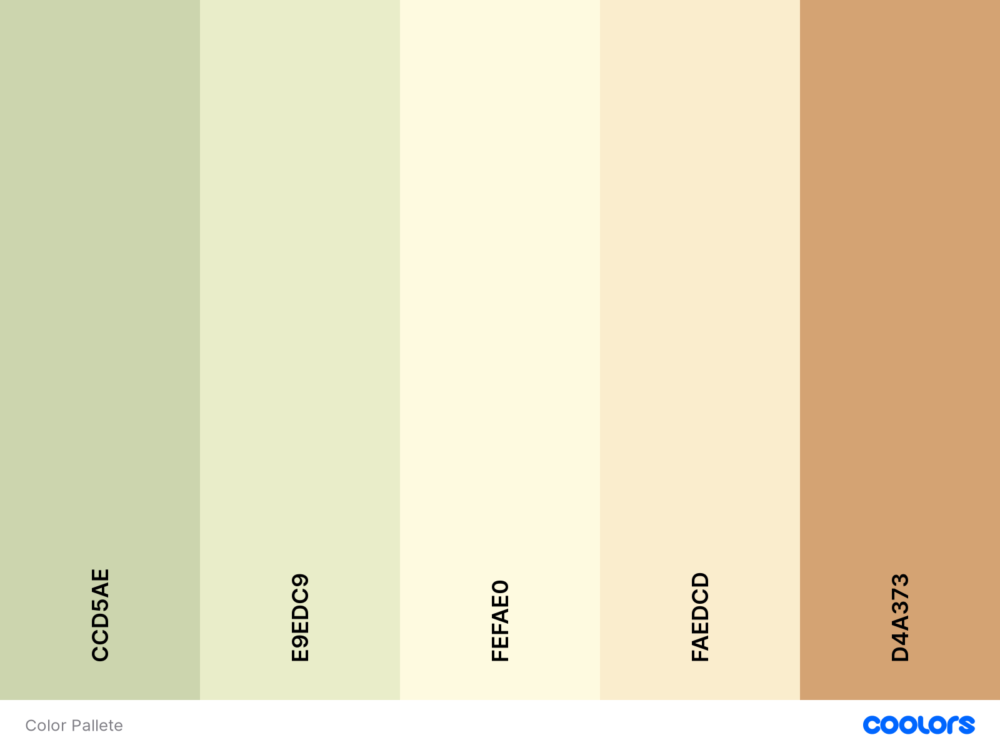

Bountiful Foods Site Plan
Our purpose
As a small business specialized in organic food we want people have access to chemical free, good quality, locally grown food. Most of our products are produce locally but we also have international suppliers but always having the best quality. This site purpose is to give people more access to our products and order them the easiest way possible.
Target Audience
Our target audience is local people from California, who has or want to implement in their lifes a healthy diet base on organic food with out chemicals. Mostly family heads that wants a trustworthy organic food supplier.
Persona 1
family head (mother or father) that wants their family to have a healthy an organic diet. Doesn't have the time to go around different places and fairs to look for organic food and finding all in one place would be a great advantage.
Persona 2
Young person that lives alone. Focussed in fitness, excersize and healthy food. Too busy with work, training and studies. Find a place to find everything they need for a healthy diet is a great help for their busy schedule.
Site Map

Home Page Large View
Home Page Medium View
Home Page Small View
Color Scheme

Primary Color: CCD5AE
Secondary Color: E9EDC9
Accent 1: FEFAE0
Accent 2: FAEDCD
Accent 3: D4A373
Typography
This is a title
This is a header
This is regular text